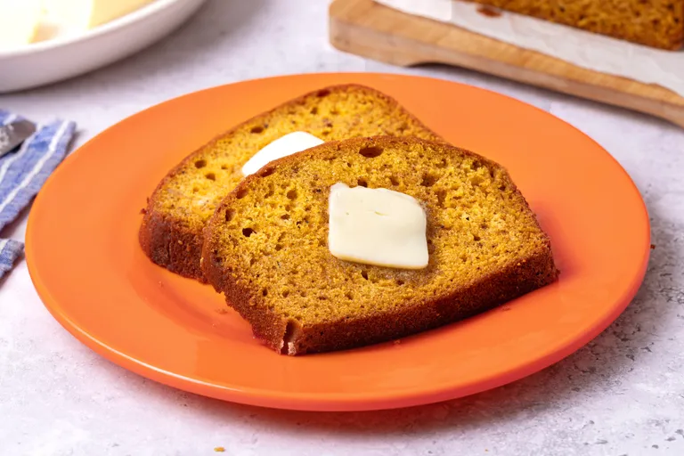

Downeast Maine Pumpkin Bread

Description
This old-fashioned Maine pumpkin bread turns one can of pumpkin into two moist, warmly spiced loaves. Keep one and share or freeze the other, or bake both ahead—the flavor is even better the next day. With more than 9,000 5-star ratings, it's one of the Allrecipes community's most-loved pumpkin bread recipes.
Ingredients
- 1 (15-ounce) can pumpkin puree
- 4 large eggs
- 1 cup vegetable oil
- ⅔ cup water
- 3 cups white sugar
- 3 ½ cups all-purpose flour
- 2 teaspoons baking soda
- 1 ½ teaspoons salt
- 1 teaspoon ground cinnamon
- 1 teaspoon ground nutmeg
- ½ teaspoon ground cloves
- ¼ teaspoon ground ginger
Steps
- Gather the ingredients. Preheat the oven to 350 degrees F (175 degrees C). Grease and flour two 9x5-inch loaf pans.
- Whisk flour, baking soda, salt, cinnamon, nutmeg, cloves, and ginger together in a large bowl.
- Whisk pumpkin purée, eggs, oil, water, and sugar together in a separate large bowl until smooth and well combined.
- Stir the flour mixture into the pumpkin mixture just until no dry streaks remain; do not overmix.
- Divide the batter evenly between the prepared loaf pans.
- Bake in the preheated oven until a toothpick inserted into the center of each loaf comes out clean or with a few moist crumbs, about 50 minutes
- Cool the loaves in their pans for 10 minutes. Run a thin knife around the edges, then turn the loaves onto a wire rack to cool completely before slicing or wrapping.
Cook's Note
This pumpkin bread is also delicious with added nuts or chocolate chips. Fold in 1 cup semisweet chocolate chips or chopped toasted pecans, or ½ cup of each, before baking.
If using homemade pumpkin purée, drain any excess liquid before measuring 1¾ cups.
Once fully cool, wrap the loaves tightly. The flavor develops especially well by the next day.
To freeze, cool the loaves completely, wrap them well, and freeze for up to three months. Thaw at room temperature before serving.
Home